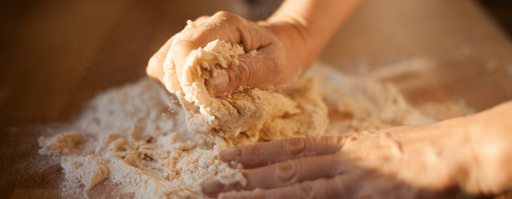
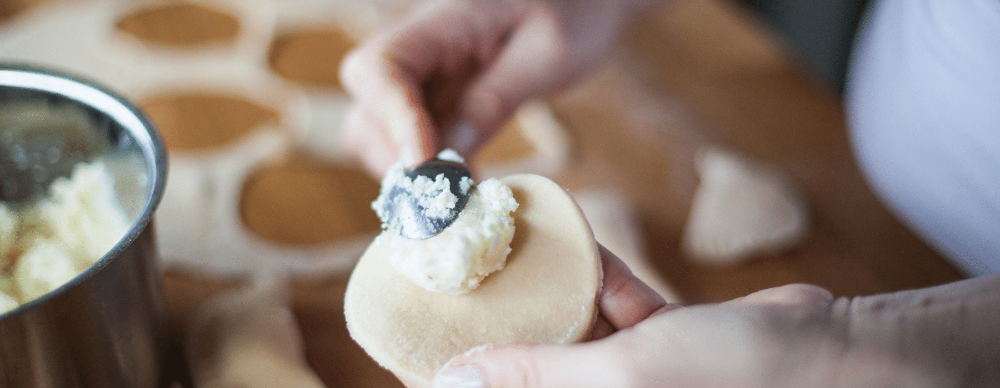
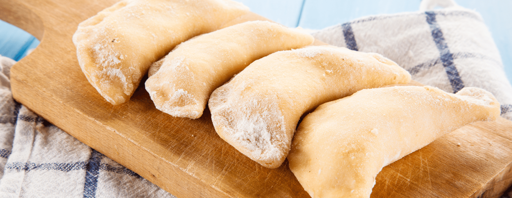

The main tasty things on Maslenitsa in Ukraine were thought to be dumplings with cheese and sour cream. According to some reports, the tradition began in Cossack times.
Varenyky with cottage cheese is a dish of traditional Ukrainian cuisine. The filling can be salty or sweet, and in some regions of Ukraine they also cook varenyky with cottage cheese and potatoes.
This dish is very nutritious, especially if served with butter and sour cream, and preparation is much easier than for dumplings with potatoes or cherries, because it does not take much time to prepare the filling.
IngredientsFor the dough, put all the flour in a large bowl, add 0.5 tsp. salt and mix well. In a small saucepan bring the water to a boil with 50 g of butter. Thinly pour the water into the dough, stirring constantly. Stir the dough until it sticks to your hands. If the dough sticks to your hands, simply add a little flour.
Form the dough into a ball and cover with a towel. Allow to rest for 30-40 minutes. For the filling take cottage cheese, rub it through a sieve, add 2 yolks, 50g of melted butter, a pinch of salt and 1 tsp of sugar. Mix the filling well until homogeneous. Roll out the dough thinly, cut out circles and make dumplings. Place 1 dessert spoon of filling on each dumpling circle and make a dumpling.
Place the ready dumplings on a surface lined with parchment or sprinkled with flour. Bring the water to a boil and drop the cooked dumplings and cook until tender.
Dress the boiled dumplings with butter and serve with sour cream!
Back